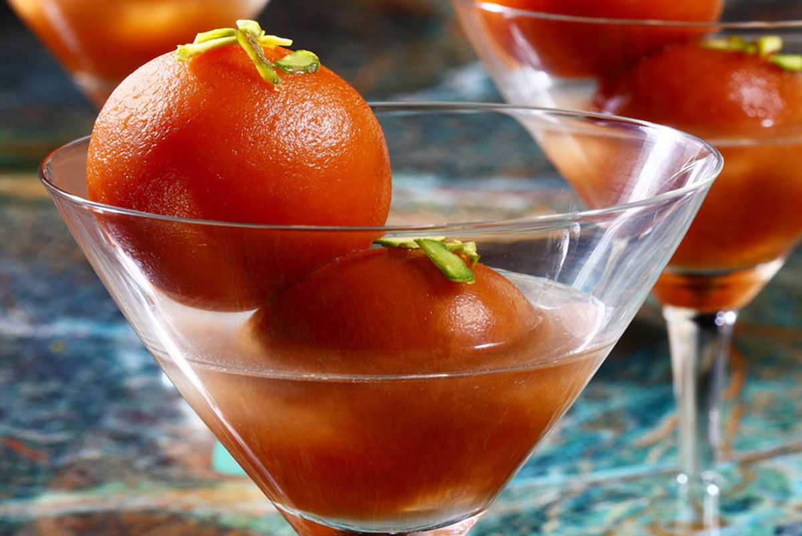

|  |
Gulab Jamun |
Ingredients
- 1 cup sugar
- 1 cup water
- 3 cardamom, powdered
- 1 tbsp lemon juice
- 9 tbsp milk powder
- 3 tbsp maida/all-purpose flour/plain flour
- 1 tbsp rava/semolina/sooji
- 1 tsp lemon juice
- 1 tsp ghee/clarified butter
- 4-5 tbsp milk, warm
Instructions
Gulab Jamun:
Firstly, in a wide pan take 1 cup of sugar.
further, to that add 1 cup of water and get to a boil.
then simmer for 4 minutes till the sugar syrup turns slightly sticky.
now add cardamom powder.
also add lemon juice to stop crystallization process.
cover and keep aside.
Firstly in a large mixing bowl take milk powder.
further, to that add maida and rava.
then add pinch of baking soda
also add ghee, lemon juice and crumble well.
slowly add milk little by little and knead well.
knead to a smooth and soft dough.
furthermore, make small balls greasing ghee to hands.
make sure there are no cracks on balls. else there are chances for gulab jamun to break while frying.
heat the ghee on low flame and when the ghee is moderately hot, fry the jamuns.
fry the balls on low flame stirring in between.
fry till the balls turns golden brown.
immediately, drop the hot jamuns into hot sugar syrup.
cover the lid and rest for 2 hours. flame should be turned off.
finally, the jamuns have doubled in size.